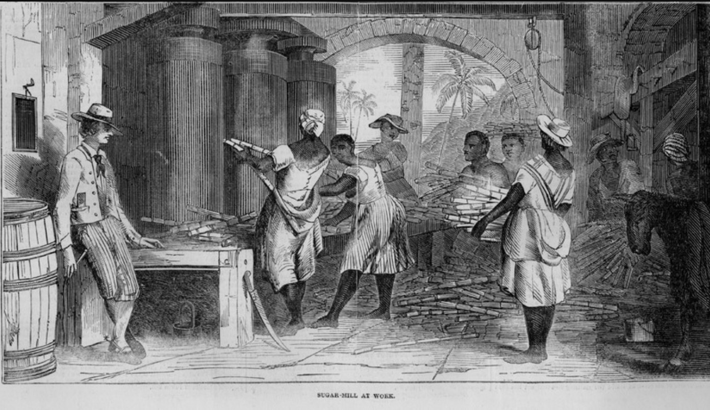

02 Sweet and Speed
Sweet and Speed

Sugar-mill at work — 설비의 크기, 사람들의 위치, 손이 기계에 가까이 가는 장면
CONSUMER
소비자의 달콤함
작은 결정과 맛이 보인다
PRODUCTION
생산 현장의 속도
베고, 옮기고, 즙을 짜고, 가열하는 작업
달콤함의 뒤편에는 생산의 시간이 있다
발표자 제공 · Sweet and Speed